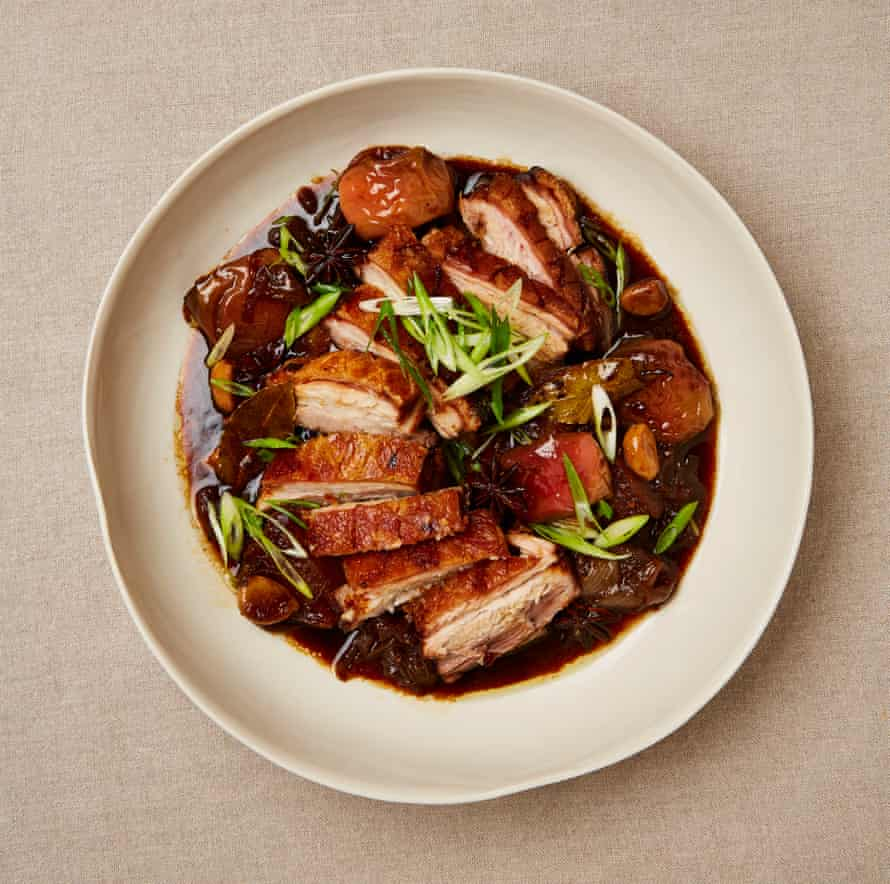

Roast pork belly with apple, soy and ginger

The flavours in this dish are inspired by Filipino pork adobo, in which the meat is cooked in a sweet and vinegary, soy-based sauce. Here, I use apple juice, apple vinegar and whole apples to cut through that richness. Don’t be put off by the long cooking time – once everything’s in the oven, it’s mostly just a waiting game. Serve with plain rice.
Heat the oven to 185C (165C fan)/365F/gas 4½. Use a small, sharp knife to score the skin of the pork in a cross-hatch pattern spaced roughly 1½cm apart, then rub a teaspoon of flaked salt into the skin, push it down into the slashes.
Put the oil in a large ovenproof saute pan on a medium-high heat, then fry the onion, stirring, for three minutes, just to soften. Add the garlic, ginger, star anise and bay leaves, and cook, stirring occasionally, until the vegetables are lightly coloured – another three minutes. Add the soy, stock, apple juice, vinegar, sugar and black peppercorns, and bring to a simmer.
Take off the heat and lay in the pork, skin side up, taking care not to get the skin wet (it should not at any stage be submerged in liquid). Transfer to the oven, roast for 90 minutes, then remove and arrange the apples around the pork, stirring gently to coat them in the sauce and again taking care not to get any liquid on the skin. Return to the oven for 30 minutes, or until the apples have softened but still retain their shape, and the pork is deeply golden.
Gently lift the pork on to a board, leave to rest for 10-15 minutes, then cut into 1½cm-thick slices. To serve, transfer the contents of the saute pan to a serving dish with a lip, lay the pork slices on top and sprinkle with the spring onions.